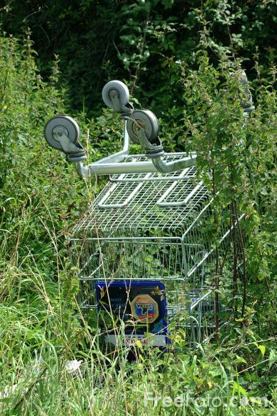

Charlette's Website
#5th Blog
Trollies are the price to pay
If she just walked up and grabbed the trollies like it wasn’t stealing, she would have gone unnoticed. Bedsides, the security guard wasn’t even paying attention: she must just go up and grab it already. She took a deep breath and stood up straight, put her shoulders back, and marched up to the trollies. Casually, she grabbed one and pulled it out of the group, pushing it gently and starting to walk towards the exit of the parking lot. The security guard still looked asleep. She started to walk faster. Not looking at where she was going, the trolly bounced off of a small pothole in the parking lot, rattled and clanked, and her world fell into slow motion as she heard the security guard call after her.
“Sorry? Where are you going with that?” All reason left her, and she ran. She got a good grip on the trolly and pushed it as fast as she could. The trolly seemed to cry out in noisy rattles, her hands started to slide along the trolly’s handle, slick with sweat as she made it through the exit. “Hey!? Stop please!” she heard him call, yet it was too late. She had already made it to the exit at the top of the hill, and from here onwards she could escape. Looking over her shoulder, she felt bad the security guard was just standing there staring at her, a disappointed look on his face. He faded away as she ran onwards. She couldn’t look back now. She needed this trolly, her mom could use it to sell treats, it would make it so much easier for her. She sighed and began to slow done into a stride. She vowed she would make it up to the security guard. One day she would say she was sorry. But for now, it was something she had to do.
- Charlette
His head flew up in shock, was his skin melting? No, it was just the sweat rushing from his pores as the blistering sun scorched his skin. Looking around the parking lot, the cars seemed to wave in the heat reflecting from the tar. It was only half past one and he had only made R32 and 20 cents since he arrived for work at 7:30. He needed to at least make R60 so he could buy his daughter her favorite treat. It’s her birthday tomorrow, and he would love to see the light in her eyes brighten when she sees that blue back Oreo packet.
He peeled himself off of the pole he was leaning against and ushered a lady to her car. Returning to his pole, pocketing the meagre R5, he began to drift off to sleep again; the day always went shorter when he dozed through it. A second later he was woken up by the clanking of the trollies. He looked around and saw a girl pushing one of the trollies through the top exit. This was suspicious. “Sorry? Where are you going with that?” he yelled across the parking lot. The girl looked at him and began to run. He tried to run to her, but she was already at the top of the hill. He stopped and yelled “Hey!? Stop, please!” hoping she would change her mind, but she kept on running. His shoulders slumped; he’s going to have to pay R100 for losing that trolly on his shift. Now a packet of Oreos seemed impossible.
-Alijah

Image found at: https://www.google.com/search?q=forgotten+trolly+in+a+bush&tbm=isch&ved=2ahUKEwjb1tXBxqfqAhVQ1-AKHW_gDwAQ2-cCegQIABAA&oq=forgotten+trolly+in+a+bush&gs_lcp=CgNpbWcQAzoECCMQJzoCCAA6BQgAELEDOgQIABBDOgcIABCxAxBDOgYIABAIEB46BAgAEBg6BggAEAoQGFDYggFYrbkBYOy7AWgAcAB4AIAB9wOIAadCkgELMi0xMi4xMS4yLjGYAQCgAQGqAQtnd3Mtd2l6LWltZw&sclient=img&ei=EyX6XpuBAdCugwfvwD8&bih=674&biw=1519&rlz=1C1CHFX_enZA835ZA835&hl=en#imgrc=z0G7IuRxWYHIkM&imgdii=awUOSV6-P6UFVM